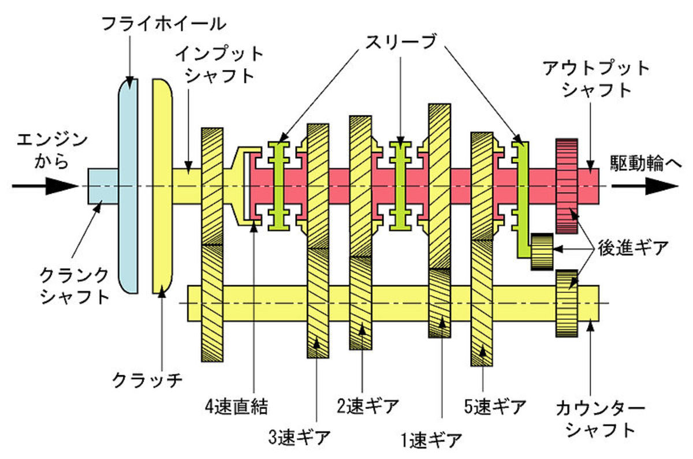

Conceptions of time¶
Linear time and modernity¶
The linear conception of time dominates the modern world. It bids us to construct it.

Bronze age, monotheistic religions had the idea of salvation: a process directed into the future. Technology certainly works that way. The spring wound mechanical clocks used in fourteenth century were a prelude to the scientific-technological advances of modernity. Newton’s physics established time as a quantifiable arrow. The Great Western Railway syncronised railway time across England in November 1840.
Time becomes a loop¶
Today we are certain that time itself runs on and does not return. However, notions of non-linear (periodic or cycical) time remain. The phenomenal sense of temporal continuity is periodic.
Human Body (heartbeat, respiration, sleep-wake cycle, circadian hormone secretion, among others)
Bantu culture
Nietzsche (western philosopher)
La Monte Young
A mind that seeks¶
The circular experience of time, our experience of time, syncronised with the world. A mind which rewards just-manageable challenges, clear proximal goals, and immediate feedback. Inventive and curious behavoiral traits. Friendly or compassionate engagemen with others. A sensitive or nervous affect.
The regulator is phasic dopaminergic signaling that orients us toward novel, surprising, or uncertain stimuli. And meta-monitoring processes that track our learning progress and stop us getting trapped. The illusion of self-determination.